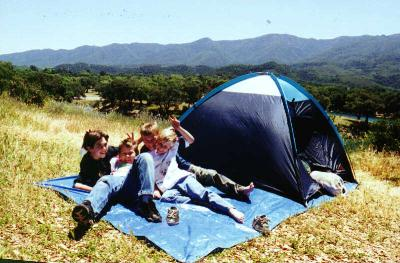

In May 1999 we went with Sean's cub scout group to Lake Cachuma, just north of Santa Barbara. (The lake is mostly out of the photo to the right, and behind the camera).
Our group had four boys; from left to right were David Vergona (Sean's best friend), Sean, Kyle Something-or-other, and Scott. The adults were me and David's father Johnny. We drove up separately, and never did really hook up with the rest of the cub scouts.
Sean, Scott, Kyle, and David demonstrate that they're strong enough to rent a couple of rowboats.
David's dad suggested that the rentals were a better value if we rented for half a day, but I pointed out that one hour was probably way more that anyone would want to row. We returned the boats after 45 minutes.
This isn't as lazy as it looks, even though the boys were determined
to row. There was enough breeze to keep Sean from making any headway,
so every once in a while I'd have to row us back to the right side of
the lake. Scott never did get the hang of when to put the oars into
the water and when to take them out. With all the trading places
we did, I'm amazed that nobody went swimming.
The boys began asking to light the campfire about 2pm; we held out until dusk. As it got dark it cooled off, but we all had enough to wear to keep warm. After dark we gave each kid a flashlight and they played hide-and-go-seek and 'flashlight tag'; I still haven't figured out the rules for that one.
David's dad and I had to constantly yell at the kids not to throw random things into the campfire. (Little firebugs!) Between the fire and the flashlights the kids had no interest in sitting in the dark and looking at stars. It was a clear moonless night; and the last time I saw that many stars I must have been a kid myself, on my grandpa's farm in Bronte, Texas. One time I dragged Sean away from the fun and made him sit in the dark for a minute to let his eyes adjust, then I pointed out how many stars there were. He did give an honest sounding "Wow", then ran back to the fire as soon as I released him.
One thing has changed about the night sky over the last 30 or 40 years... the number of satellites you can see with the naked eye. I remember one night when I was a kid when we stood outside waiting for a satellite to pass overhead. We knew it was gonna come, it must have been on the news or something. I don't know if this was Sputnik or some early American thing or what; but I do remember seeing it pass overhead.
Well, on our camping trip I sat away from the fire with Johnny for 15 or 20 minutes. During this time I was able to see three satellites moving against the stars. It was a good clear night, and an hour or two after sunset. I think that the satellite must have been high enough to still be in the sunlight as it passed over our heads. Nowadays there are whole networks of satellites in low earth orbit; what with GPS and Iridium phones, and I think the military has an untold number of things up there.
One night the next week Nancy and I were sitting outside in the spa after dark, and as I was telling her this story, darned if I didn't see another one pass overhead right at that moment.
Anyway, on that night of camping we pulled the plug about 9:30, and the kids had all had a big enough day that they went right to bed (to bag?) and fell immediately to sleep. I had borrowed a tent from Nancy's dad which turned out to be only big enough for the kids; this allowed me to sleep in the back of my car. I'm sure I had the best night of all.
Here it is, next morning, and everybody loves camping. I guess it wasn't cold enough. I did get to show the boys Tulee Fog raising off lake the just after sunrise... Beautiful!
Sean's most vivid memory of his first camping trip might be the coffee percolator. His reading class had read about one in a story, and none of the kids knew what one was. I guess all the kids knew about was Mr. Coffee or Starbucks. The teacher explained what one was and what it looked like... she even sang an old TV jingle well enough that I could recognize it when Sean sang it to me. (buppa-buppa-BUP-bup!)
Anyway, I had bought one for the trip when I bought the old fashioned Coleman stove. I was the first one awake, and I started coffee brewing. When Sean came out, he excitedly told me about his reading class, then ran and woke the other boys to show them the coffee pot.
He made me take this picture of it to take back to his class.
So overall camping was such a hit that the boys did it in the backyard the next Saturday night, and two more times after that.
Github port 8/2016